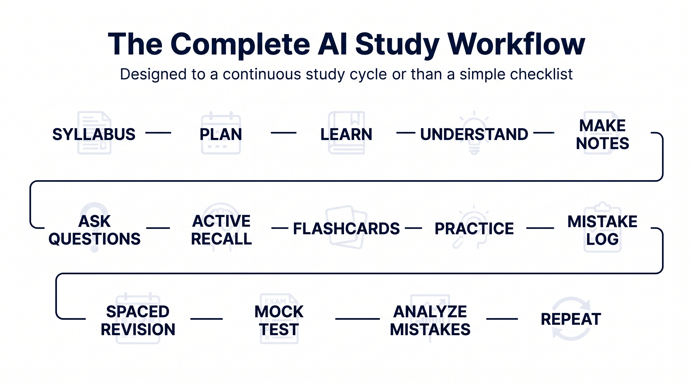
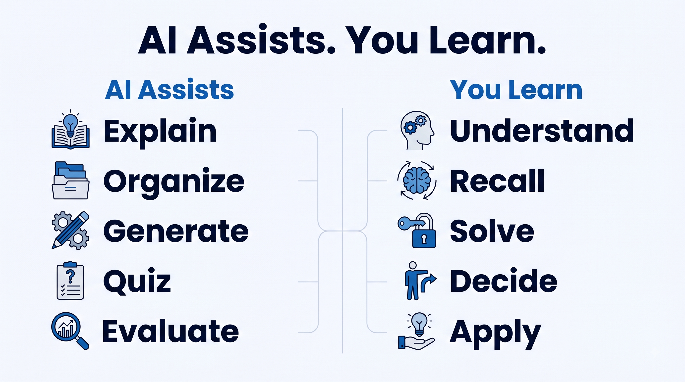

Introduction
Studying with AI is easy. Studying effectively with AI is different.
You can ask an AI chatbot to summarize a chapter, generate notes, or answer questions in seconds. But if your entire study method becomes read → ask AI → copy the answer → move on, you're not necessarily learning better.
A better approach is to use AI at different stages of the learning process: understanding, organizing, recalling, practicing, revising, and testing yourself.
That is what this guide is about.
An AI study system is a structured way of using AI tools throughout the learning process—from planning and understanding concepts to active recall, practice, revision, and testing. Instead of using AI simply to generate answers or notes, the system uses it as a study assistant while you remain responsible for learning and remembering the material.
We built the Perfect AI Study System around a simple principle:
Use AI to make studying more active, organized, and personalized— not to do the learning for you.
The system below works with free or commonly available AI tools, and you can adapt it to your subject, course, and budget.
Quick Answer: The Perfect AI Study System
Here is the complete workflow at a glance:
Learn → Understand → Make Notes → Ask Questions → Active Recall → Flashcards → Practice → Review Mistakes → Spaced Revision → Mock Test
AI can assist at almost every stage, but you remain the person doing the learning.
| Stage | What you do | How AI helps |
|---|---|---|
| 1. Plan | Define what you need to learn | Break the syllabus into manageable topics |
| 2. Learn | Study the concept | Explain difficult ideas |
| 3. Notes | Organize important information | Turn material into structured notes |
| 4. Question | Identify what you don't understand | Answer follow-up questions |
| 5. Recall | Try remembering without looking | Generate questions and quizzes |
| 6. Flashcards | Practice key information | Create flashcards |
| 7. Practice | Solve problems/questions | Generate practice exercises |
| 8. Review | Find your mistakes | Explain errors and weak areas |
| 9. Revision | Return to material later | Create spaced revision sessions |
| 10. Test | Simulate the exam | Generate a mock test |
The important part is the order.
Don't spend your entire study session generating beautiful notes. The system eventually moves you toward retrieval and practice, which are much more useful for checking whether you can actually remember and use what you've learned.
What This Study System Is Actually Trying to Solve
Most students have one of two problems.

Problem 1: They don't know where to start
You have:
- Lectures
- Textbooks
- PDFs
- YouTube videos
- Assignments
- Previous questions
- An upcoming exam
Everything feels important.
AI can help turn that pile of information into a clear learning path.
Problem 2: They study, but don't know whether they actually learned
Reading something five times can make it feel familiar.
But familiarity isn't the same as being able to reproduce the information during an exam.
That's why the second half of our system focuses heavily on active recall, practice, feedback, and spaced revision.
1. Start With a Study Plan
Before opening an AI tool, define your target.
Don't start with:
"Help me study computer science."
That's too broad.
Instead:
"I have an exam in 14 days. I need to learn five chapters of Computer Organization. I understand binary arithmetic but struggle with cache memory and pipelining. Create a study plan that leaves the final three days for revision and practice."
Now the AI has useful context.
Ask AI to divide the subject into:
- Topics
- Subtopics
- Priority levels
- Estimated study sessions
- Practice sessions
- Revision dates
Example prompt
I have 10 days to prepare for [subject]. Here is my syllabus: [paste syllabus]. Divide it into a realistic daily study plan. Prioritize high-weight and difficult topics, include practice sessions, and reserve the final two days for revision and mock testing. Don't assume I can study continuously for several hours.
The important part is that AI creates the plan, but you decide whether the plan is realistic.
2. Learn the Concept With AI
Now start learning.
This is where an AI tutor can be extremely useful.
Instead of asking:
"Explain pipelining."
Try:
Explain CPU pipelining to me as a beginner. Start with an intuitive example, then explain the technical definition, then give me one simple example. Don't move to the next level until I understand the previous one.
If you don't understand something, ask:
"Explain that using a simpler example."
Or:
"What is the difference between these two concepts?"
Or:
"Test me before explaining the answer."
The goal
Don't use AI simply to receive information.
Use it as a tutor that helps you interact with the information.
3. Turn Your Learning Material Into Useful Notes
Once you understand a topic, create notes.
But don't ask AI:
"Make extremely detailed notes."
That often produces a wall of text.
Instead, give it your actual material and specify the structure you want.
For example:
Turn these lecture notes into concise revision notes. Keep important definitions, formulas, processes, examples, and differences. Remove repetition. Don't introduce information that isn't supported by the material.
If your material is a PDF, slides, or collection of sources, tools designed around source-grounded work can be particularly useful.
Source-grounded AI tools can help you work from your own study materials instead of relying entirely on general AI knowledge.
That's particularly useful when you want your notes to remain tied to your actual course material.
4. Stop and Ask Questions
This is an underrated step.
After learning a topic, ask yourself:
What don't I understand yet?
Then use AI to investigate those gaps.
For example:
"I understand direct mapping in cache memory, but I don't understand why conflict misses occur. Explain only that part."
This is much more efficient than restarting the entire chapter.
You can also ask AI to identify likely misconceptions:
What are the five mistakes a beginner is most likely to make when learning this topic?
Then check whether you've made any of them.
5. Active Recall: Close the Notes
This is where the study system changes.
Stop looking at the material.
Ask yourself questions.
For example, after studying CPU scheduling, close your notes and try answering:
- What is CPU scheduling?
- What is the difference between preemptive and non-preemptive scheduling?
- What is turnaround time?
- What is waiting time?
- When would Round Robin be useful?
You can ask AI to generate these questions.
But answer them yourself first.
A useful prompt
Quiz me on this topic one question at a time. Don't show me the answer until I attempt it. After each answer, tell me what I got right, what I missed, and what I should review.
That turns AI into a practice partner, not an answer machine.
6. Create Flashcards
Flashcards work particularly well for:
- Definitions
- Terminology
- Formulas
- Short explanations
- Key differences
- Important facts
- Programming concepts
Give AI your material and ask:
Create 20 flashcards from these notes. Each question should test recall rather than recognition. Keep the answers short and accurate.
Then practice them.
Don't make this mistake
Don't create 200 flashcards for a single chapter just because AI can.
A flashcard should exist because the information is worth remembering.
7. Practice Problems
Now move from remembering to using the knowledge.
This is especially important for:
- Mathematics
- Programming
- Physics
- Chemistry
- Accounting
- Engineering
- Problem-solving subjects
For example:
"Give me a Java array problem using the concepts I just learned. Don't give me the solution. Wait for my attempt."
Or:
"Give me five progressively harder problems on this topic."
The important rule
Attempt first.
Don't immediately ask:
"Give me the answer."
If you get stuck, ask for a hint.
For example:
"Give me only the first hint."
Then try again.
8. Build a Mistake Log
This is one of the most valuable parts of the system.
Every time you get something wrong, record:
| Topic | Mistake | Why I got it wrong | Correct idea |
|---|---|---|---|
| Cache memory | Confused hit and miss | Similar terminology | Hit = requested data found |
| Java | Used == incorrectly |
Confused reference/value comparison | Understand context before choosing |
| Accounting | Wrong formula | Didn't identify question type | Check required quantity first |
Then ask AI:
Analyze my mistake log. Which concepts am I repeatedly getting wrong?
This turns your mistakes into a personalized study map.
9. Spaced Revision
Don't learn something once and then abandon it until the night before the exam.
Instead, revisit it after increasing intervals.
For example:
Day 1: Learn
Day 2: Quick recall
Day 4: Practice
Day 7: Recall + questions
Day 14: Mock test
The exact schedule can vary. The principle is to spread your review across multiple sessions rather than cramming everything into one session.
AI can help you manage this.
For example:
I studied these topics today. Create a revision schedule that brings them back at spaced intervals and includes active-recall questions rather than just rereading.
10. Interleave Your Practice
Don't always practice the same type of problem ten times in a row.
Suppose you're learning mathematics.
Instead of:
10 differentiation problems → 10 integration problems → 10 limits problems
Eventually mix them:
differentiation → limits → integration → differentiation → limits
This forces you to decide which method to use, rather than automatically applying the method from the previous question.
This becomes particularly useful once you understand the basics.
11. Use AI for a Mock Exam
Now simulate the real thing.
Tell AI:
Create a 60-minute mock test based on these topics. Match the difficulty and question style of my actual exam. Don't show the answers until I submit my attempt.
Then:
Set a timer.
No notes.
No AI assistance during the test.
Take the exam exactly as you would take the real one.
Afterward, use AI to analyze your performance.
Ask:
Analyze my answers. Categorize every mistake as a knowledge gap, careless mistake, misunderstanding, or application problem. Then tell me what I should revise before taking another mock test.
Now your next study session is based on evidence, not guesswork.
The Complete AI Study Workflow
Put everything together:

SYLLABUS
↓
PLAN
↓
LEARN THE CONCEPT
↓
UNDERSTAND IT
↓
MAKE NOTES
↓
ASK QUESTIONS
↓
ACTIVE RECALL
↓
FLASHCARDS
↓
PRACTICE PROBLEMS
↓
MISTAKE LOG
↓
SPACED REVISION
↓
INTERLEAVED PRACTICE
↓
MOCK TEST
↓
ANALYZE MISTAKES
↓
REPEAT
That's the Perfect AI Study System.
Notice that AI appears throughout the process, but the student remains at the center.
The Best AI Tools for Each Stage
You don't need ten different AI tools.
In fact, starting with too many can make studying more complicated.
🧠 Learning & explanation
ChatGPT
Useful for explanations, questioning, step-by-step problem solving and guided learning.
📚 Source-based studying
Gemini Notebook
Useful when you have a collection of course materials and want answers, summaries, study guides, quizzes or flashcards grounded in those sources.
📝 Practice
Use whichever AI assistant you already have to:
- Generate questions
- Give hints
- Check explanations
- Create mock tests
- Analyze mistakes
The important thing isn't which chatbot has the fanciest interface.
It's how you use it.
A Complete Example
Imagine you're preparing for a Java exam.
Step 1 — Plan
Give AI your syllabus.
Day 1 → Classes & Objects
Day 2 → Inheritance
Day 3 → Polymorphism
Day 4 → Exception Handling
Day 5 → Collections
Day 6 → Revision
Day 7 → Mock Test
Step 2 — Learn
You study inheritance.
Ask AI to explain it.
Step 3 — Notes
Create concise notes from your textbook and lecture material.
Step 4 — Recall
Close everything.
Answer:
"What is inheritance?"
Then:
"What are its advantages?"
Then:
"What is the difference between inheritance and composition?"
Step 5 — Practice
Ask for Java problems.
Solve them yourself.
Step 6 — Mistakes
You discover that you're repeatedly confusing method overriding and overloading.
Record it.
Step 7 — Revision
Two days later, test yourself again.
Step 8 — Mock Test
Take a full Java test under exam conditions.
Step 9 — Analyze
Discover that your biggest weakness is exception handling.
Step 10 — Targeted Revision
Spend the next session specifically fixing exception handling.
That's a feedback loop.
And that's much better than simply asking AI:
"Give me notes for Java."
Our Honest Take
AI can make studying more organized and interactive, but it isn't a magic shortcut.
The biggest mistake is using AI to remove the difficult parts of learning.
If AI:
- writes every answer,
- solves every problem,
- summarizes everything,
- creates all your notes,
- and quizzes you without you seriously attempting the questions,
you may end up doing a lot of AI activity without doing enough learning.
The strongest approach is to use AI where it provides leverage:
AI explains → you understand.
AI asks → you recall.
AI generates → you solve.
AI evaluates → you correct.
AI organizes → you decide.
That's the philosophy behind this system.
Pros & Limitations
Pros
- Creates a structured study workflow.
- Makes explanations more personalized.
- Generates unlimited practice questions.
- Makes active recall easier to implement.
- Helps identify weak areas.
- Can turn existing study materials into useful study resources.
- Makes revision easier to organize.
- Can adapt to different subjects and difficulty levels.
Limitations
- AI can make mistakes.
- AI-generated explanations should not automatically be treated as authoritative.
- Different subjects require different study methods.
- You still need to understand your syllabus and exam requirements.
- Some AI features have usage limits or require paid plans.
- AI should not replace your own problem-solving and recall.
- Your school's or instructor's rules determine what AI use is permitted for graded work.
Alternatives & Comparisons
You don't have to use this exact system.
Traditional study system
Textbook → Notes → Revision → Exam
Simple, but often heavily dependent on rereading.
AI-first study system
AI summary → AI answers → AI-generated notes → Exam
Fast, but risky if you become dependent on AI-generated information.
Nexora AI Study System
Learn → Understand → Recall → Practice → Feedback → Spaced Revision → Test
AI supports the process without replacing the student.
That's the approach we'd recommend.
Frequently Asked Questions
Can AI replace studying?
No.
AI can make parts of studying faster and more interactive, but you still need to understand, recall and apply the material yourself.
Should I use AI to make all my notes?
Not necessarily.
AI can help organize and condense notes, but start with your actual course materials and verify important information. For source-heavy studying, grounded AI tools can be useful because responses can be tied to the sources you provide.
Is active recall really necessary?
It is one of the most useful parts of this system. Actively retrieving information from memory is different from simply rereading it, which makes it an important part of an effective study workflow.
How often should I revise?
Don't rely on one universal schedule. Spread your review across multiple sessions rather than doing everything immediately before the exam. Adjust the intervals according to the difficulty of the material and how well you can recall it.
Should I use multiple AI tools?
You can, but you don't need to.
Start with one or two tools that cover your needs. Add another tool only when it provides a meaningful advantage.
Can I use this system for programming?
Yes.
In fact, programming fits the system particularly well because you can combine explanations, coding exercises, debugging, active recall and increasingly difficult practice problems.
Can I use AI during an exam?
Only if your institution or instructor explicitly permits it. For graded work, follow the applicable academic-integrity and AI-use rules.
Final Verdict
The Perfect AI Study System isn't about finding one magical AI tool.
It's about building a workflow where every stage of studying has a purpose.
If you're starting today, don't try to implement everything at once.
Start with these five:
- Plan what you're learning.
- Use AI to understand difficult concepts.
- Close your notes and practice active recall.
- Solve problems instead of only reading explanations.
- Revisit what you've learned instead of cramming everything before the exam.
Then gradually add flashcards, mistake tracking, interleaving and mock tests.
The goal isn't to study with AI as much as possible.
The goal is to learn more effectively with the right amount of AI assistance.